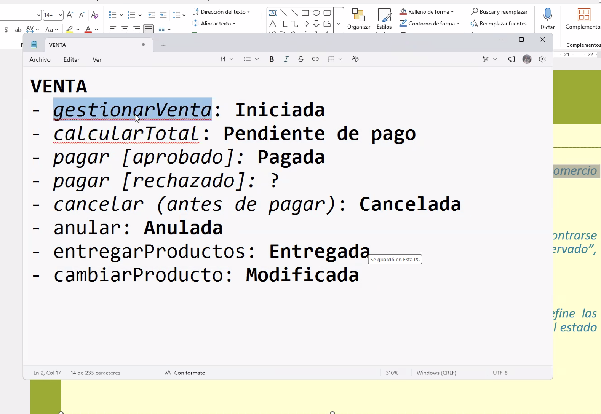
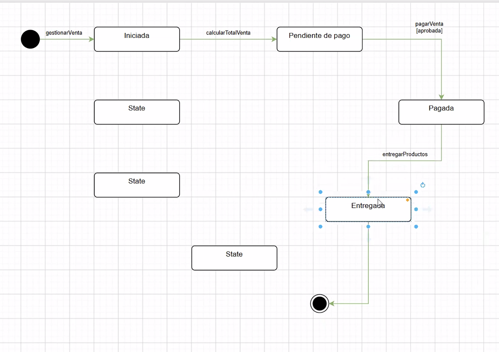
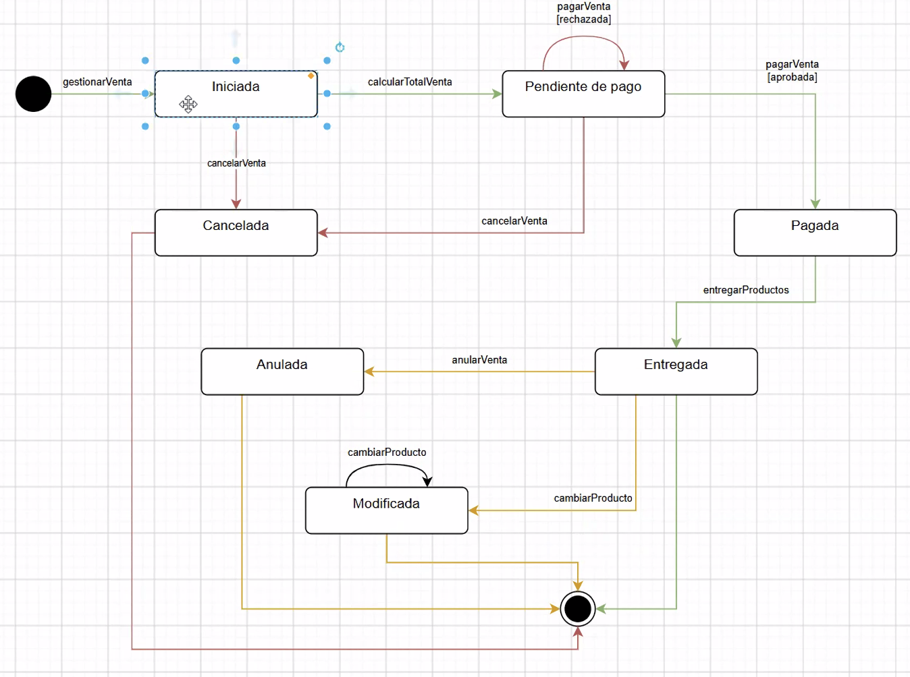
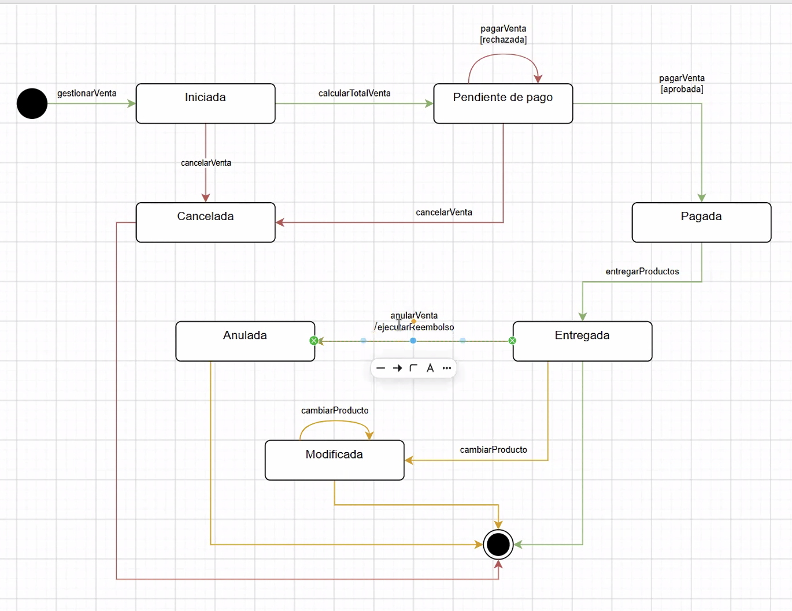

El diagrama de estado UML modela los estados de un objeto durante su ciclo de vida y las transiciones entre ellos ante eventos externos o internos.
Pulsa Escape o haz clic fuera de la imagen para cerrar.
Clase 9 · Análisis y Diseño de Sistemas Avanzado
1Idea central
El diagrama de estado UML modela los estados de un objeto durante su ciclo de vida y las transiciones entre ellos ante eventos externos o internos.
24 conceptos clave
Condición o fase del ciclo de vida de un objeto.
Cambio de un estado a otro, disparado por un evento.
Modelo de sistemas con estados finitos y transiciones.
Expresión booleana [ ] que habilita la transición.
3Objetivos de la sesión
4Definiciones clave
| Concepto | Definición |
|---|---|
| Clase | Plantilla para crear objetos en programación orientada a objetos. |
| Objeto | Instancia de una clase; el diagrama modela el comportamiento de una instancia a lo largo del tiempo. |
| Máquina de Estado Finito | Modelo matemático para sistemas que están en un número finito de estados con transiciones definidas. |
| Encapsulamiento | Ocultar los detalles internos de un objeto y exponer solo lo necesario. |
| Cohesión | Grado en que las responsabilidades de un módulo se relacionan entre sí; alta cohesión es deseable. |
| Acoplamiento | Grado de interdependencia entre partes del sistema; bajo acoplamiento es deseable. |
| Patrón de Diseño | Solución reutilizable a un problema común de diseño: Singleton, Factory, Observer. |
Ejemplo: en un carrito de compras, el producto puede estar Disponible, Reservado o Agotado.
5Herramientas de modelado
| Tipo | Herramientas |
|---|---|
| Comerciales | Visual Paradigm, Enterprise Architect, IBM Rational Rose, SysML. |
| Gratuitas | PlantUML, Diagrams.net, Lucidchart, draw.io. |
6Elementos del diagrama de estado
Condición específica o fase del ciclo de vida de un objeto. Se dibuja como rectángulo redondeado con el nombre del estado.
Ejemplo: “Disponible”, “Reservado”, “Agotado”.
Cambio de un estado a otro, representado con una flecha del estado de origen al de destino.
Ejemplo: “añadirAlCarrito” lleva de Disponible a Reservado.
Algo que ocurre en el sistema y puede desencadenar una transición. Se escribe cerca de la flecha.
Ejemplo: “añadirAlCarrito”, “comprar”.
Actividad que se ejecuta durante una transición, separada de la guarda por una barra /.
Ejemplo: al pasar de Reservado a Agotado, la acción “/actualizarInventario”.
Expresión booleana que debe ser verdadera para que ocurra la transición, entre corchetes cerca de la flecha.
Ejemplo: “[pagoAprobado]”.
El inicial es un círculo relleno; el final es un círculo relleno rodeado por otro.
Ejemplo: el producto inicia “En Inventario” y termina “Descatalogado”.
Contienen otros estados y transiciones internas; simplifican diagramas complejos.
Ejemplo: “En Carrito” incluye “Reservado” y “Listo para Compra”.
Áreas separadas que muestran un objeto en más de un estado al mismo tiempo.
Ejemplo: un producto puede estar a la vez “En Oferta” y “Disponible”.
7Cómo se lee una transición
evento [condición guarda] / acción
Un pago rechazado no cambia el estado: la venta permanece pendiente. Solo la aprobación permite pasar a Pagada.
8Flujo del concepto: ciclo de vida de un producto
Una máquina de estado finito modela estos estados y las transiciones definidas entre ellos.
9Caso práctico: ciclo de vida de una venta
El objeto modelado es una Venta. El diagrama muestra las etapas desde su inicio hasta el pago, la entrega, la cancelación o la modificación.
| Estado | Significado en el modelo |
|---|---|
| Iniciada | Se empieza a gestionar la venta. |
| Pendiente de pago | Se calculó el total y se espera el resultado del pago. |
| Pagada | El pago fue aprobado. |
| Entregada | Se entregaron los productos. |
| Cancelada | La venta se canceló antes de completarse. |
| Anulada | Se anuló una venta entregada y se ejecutó el reembolso. |
| Modificada | Se cambió el producto después de la entrega. |
| Origen | Evento y condición | Destino | Acción o resultado |
|---|---|---|---|
| Inicial | gestionarVenta | Iniciada | Comienza el ciclo de la venta. |
| Iniciada | calcularTotalVenta | Pendiente de pago | Se calcula el monto a pagar. |
| Pendiente de pago | pagarVenta [aprobada] | Pagada | El pago es aceptado. |
| Pendiente de pago | pagarVenta [rechazada] | Pendiente de pago | La venta sigue esperando un pago válido. |
| Iniciada | cancelarVenta | Cancelada | Se termina antes del pago. |
| Pendiente de pago | cancelarVenta | Cancelada | Se termina mientras espera el pago. |
| Pagada | entregarProductos | Entregada | Se completa la entrega. |
| Entregada | anularVenta | Anulada | Se ejecuta ejecutarReembolso. |
| Entregada | cambiarProducto | Modificada | Se registra el cambio de producto. |
| Modificada | cambiarProducto | Modificada | El modelo permite registrar otro cambio. |
pagarVenta [rechazada] es un bucle sobre Pendiente de pago. La guarda [aprobada] permite avanzar a Pagada. La anulación incluye una acción explícita de reembolso.
10Evolución visual del modelo

Primer paso: listar los eventos previstos y los estados que cada uno habilita.

Boceto temprano: las cajas que dicen “State” son marcadores pendientes de nombrar.

Se incorporan cancelación, rechazo de pago y modificación de producto.

Versión completa: anulación de una venta entregada con reembolso asociado.
11Método de elaboración en 10 pasos
| # | Qué hacer | Ejemplo (producto) |
|---|---|---|
| 1 | Identificar el objeto o clase de interés. | Modelar el ciclo de vida de un objeto Producto. |
| 2 | Definir los estados. | Disponible, Reservado, Agotado. |
| 3 | Identificar eventos y transiciones. | “añadirAlCarrito” lleva de Disponible a Reservado. |
| 4 | Añadir acciones y condiciones guarda. | De Reservado a Agotado con acción “actualizarInventario” y guarda “[últimaUnidad]”. |
| 5 | Dibujar el diagrama. | Estado inicial → estados → flechas de transición con etiquetas. |
| 6 | Revisar y refinar. | Verificar que los estados y transiciones sean correctos y completos. |
| 7 | Validar el diagrama. | Compartirlo con el equipo o stakeholders para validar el modelo. |
| 8 | Documentar. | Añadir descripciones de estados, eventos, acciones y condiciones. |
| 9 | Integrar con otros diagramas UML. | Asegurar la integración con diagramas de clases y de secuencia. |
| 10 | Mantener actualizado. | Actualizarlo a medida que avanzan los requisitos. |
12¿Cuándo son útiles?
| Dominio | Aplicación del diagrama de estado |
|---|---|
| Comercio electrónico | Ciclo de vida de un producto o una orden: “Disponible”, “Reservado”, “Agotado”, “Enviado”. |
| BPM | Etapas de un proceso: “Inicio”, “Aprobación”, “Ejecución”, “Cierre”. |
| Videojuegos | Estados de un personaje: “Vivo”, “Herido”, “Muerto”. |
| Control automatizado | Control de tráfico aéreo o fabricación automatizada: estados y transiciones críticos para la seguridad. |
| Aplicaciones de usuario | Software de edición de video o plataformas de aprendizaje: estados de la interfaz. |
| Telecomunicaciones | Estados de una llamada: “Iniciada”, “En curso”, “Terminada”. |
| Firmware / software embebido | Microcontroladores en dispositivos IoT: optimización de recursos mediante estados y transiciones. |
13Ejemplos de la clase
Un producto pasa de “Disponible” a “Reservado” cuando un cliente lo añade al carrito, a “Agotado” al comprarse la última unidad, vuelve a “Disponible” al reabastecerse y llega a “Descatalogado” al retirarse del catálogo.
Un personaje tiene estados “Vivo”, “Herido” y “Muerto”. Al recibir daño pasa de Vivo a Herido; si se cura vuelve a Vivo; si su vida llega a cero pasa a Muerto. El evento “recibirDaño” dispara la transición y la acción “/reducirVida” se ejecuta durante el cambio de estado.
14Conclusiones
Cuando el comportamiento de un objeto cambia de forma relevante a lo largo del tiempo y esas etapas deben quedar explícitas.
El simple modela una fase única; el compuesto agrupa estados y transiciones internas para simplificar diagramas complejos.
Controlan qué transición se permite: sin guardas explícitas, el modelo no muestra por qué un cambio de estado ocurre o no.
El diagrama de estado detalla el ciclo de vida de un objeto, y se relaciona con el diagrama de clases (la clase modelada) y con el de secuencia (las interacciones que disparan eventos).
15Recursos y referencias
30630-S09-PRESENTACION.pdf (carpeta de la clase).Qué recordar
Clave: un diagrama de estado bien definido ayuda a desarrolladores, gerentes de producto y analistas a comprender el comportamiento del sistema de forma visual.